🌿 1. Tổng Quan Về Vùng Đất Thất Sơn An Giang
Nằm ở đầu nguồn châu thổ sông Cửu Long nơi sông Tiền và sông Hậu cùng chảy vào nước Việt, An Giang là một trong những vùng đất độc đáo và đa dạng bậc nhất miền Tây Nam Bộ. Với diện tích tự nhiên 3.536,7 km², An Giang sở hữu địa hình bán sơn địa kỳ thú — nơi đồng bằng phù sa màu mỡ trải dài tiếp giáp với dãy núi Thất Sơn (Bảy Núi) hùng vĩ và kỳ bí vươn lên giữa trời xanh.
An Giang là cái nôi giao thoa văn hóa rực rỡ của 4 dân tộc anh em Kinh – Khmer – Chăm – Hoa, hội tụ nền văn minh Óc Eo cổ đại từng hưng thịnh bậc nhất Đông Nam Á từ thế kỷ I đến VII. Hàng năm, khi gió mùa Tây Nam mang con nước từ thượng nguồn sông Mekong đổ về (tháng 9 – tháng 11), An Giang bước vào Mùa Nước Nổi huyền thoại — mùa cá linh non ùa về, hoa điên điển nở vàng rực và những thảm bèo cám xanh mướt ngút ngàn tại Rừng tràm Trà Sư tạo nên cảnh sắc thiên nhiên thơ mộng làm say đắm lòng người.
🏛️ 2. Vị Trí Địa Lý & Dấu Ấn Lịch Sử Vùng Đất Khai Hoang Mở Cõi
📜 Cơ sở dữ liệu pháp lý & Quyết định xếp hạng của Nhà nước Việt Nam:
- Di tích khảo cổ Quốc gia đặc biệt Óc Eo – Ba Thê: Xếp hạng Di tích quốc gia đặc biệt theo Quyết định số 1419/QĐ-TTg ngày 27/9/2012 của Thủ tướng Chính phủ, là trung tâm đô thị cảng thị cổ phồn thịnh của Vương quốc Phù Nam xưa.
- Di sản văn hóa phi vật thể Quốc gia & Hồ sơ UNESCO: Lễ hội Vía Bà Chúa Xứ Núi Sam (TP. Châu Đốc) được Bộ Văn hóa, Thể thao và Du lịch đưa vào Danh mục Di sản văn hóa phi vật thể quốc gia theo Quyết định số 2684/QĐ-BVHTTDL ngày 08/9/2014; Thủ tướng Chính phủ đã có Công văn số 425/TTg-KGVX cho phép gửi hồ sơ đệ trình UNESCO công nhận là Di sản văn hóa phi vật thể đại diện của nhân loại.
- Cụm Di tích Quốc gia Núi Sam: Lăng Thoại Ngọc Hầu (Sơn Lăng), Chùa Tây An (Tây An Cổ Tự) và Chùa Hang (Phước Điền Tự) được Bộ Văn hóa – Thông tin xếp hạng Di tích Lịch sử – Kiến trúc Nghệ thuật cấp Quốc gia theo Quyết định số 177/QĐ-BT ngày 27/1/1980.
- Khu Bảo vệ Cảnh quan Rừng tràm Trà Sư: Phê duyệt Quy hoạch bảo tồn bền vững theo Quyết định số 1970/QĐ-UBND của UBND tỉnh An Giang, bảo tồn vùng ngập nước ngọt sinh thái 845 ha đặc hữu của vùng Tứ giác Long Xuyên.
- Kỷ lục Châu Á trên đỉnh Thiên Cấm Sơn: Tượng Phật Di Lặc trên đỉnh Núi Cấm (độ cao 705m) được Tổ chức Kỷ lục Châu Á (Asian Book of Records) xác lập năm 2013 là "Tượng Phật Di Lặc lớn nhất trên đỉnh núi ở châu Á" (cao 33,6m, nặng gần 1.700 tấn bê tông cốt thép).
Về địa giới địa lý, An Giang là tỉnh biên giới phía Tây Nam, có đường biên giới giáp Vương quốc Campuchia dài gần 100km với hai cửa khẩu quốc tế Tịnh Biên và Vĩnh Xương. Địa hình An Giang đặc biệt với vùng Thất Sơn gồm 7 ngọn núi tiêu biểu (Núi Cấm, Núi Sam, Núi Két, Núi Dài, Núi Tượng, Núi Nước, Núi Cô Tô) sừng sững nổi bật giữa đồng bằng châu thổ, giữ vị trí phên dậu chiến lược và là trung tâm giao thương quốc tế quan trọng của miền Nam từ thời các bậc tiền nhân Thoại Ngọc Hầu đào kênh Vĩnh Tế mở mang bờ cõi.
📜 3. Huyền Thoại & Truyền Tích Dân Gian Vùng Đất Thất Sơn
Không chỉ sở hữu thiên nhiên trù phú, An Giang còn là vùng đất chứa đựng những câu chuyện lịch sử hào hùng và huyền tích tâm linh kỳ bí truyền đời:
👑 Sự Tích Bà Chúa Xứ Núi Sam & Đoàn Quân Mở Cõi
Truyền thuyết dân gian kể rằng, vào đầu thế kỷ XIX khi giặc Xiêm sang cướp phá biên cương, chúng trèo lên đỉnh núi Sam bắt gặp pho tượng Bà bằng đá sa thạch tuyệt mỹ. Quân giặc hò reo xúm lại khiêng tượng xuống núi để mang về nước, nhưng khi nhấc tượng lên thì lạ thay tượng Bà mỗi lúc một nặng trĩu tựa nghìn cân, không tài nào khiêng nổi. Một tên giặc tức tối đập gãy một cánh tay của tượng và lập tức bị trừng phạt thổ huyết bỏ mạng, toán giặc hoảng loạn tháo chạy.
Về sau, Bà nhập vào một cô đồng trong làng bảo rằng muốn dân làng thỉnh Bà xuống chân núi để Bà phò trợ, ban bình an và mùa màng tươi tốt. Dân làng cử nhiều tráng đinh lực lưỡng lên thỉnh nhưng không dịch chuyển được tượng. Cô đồng bảo tiếp: "Chỉ cần cử 9 cô gái đồng trinh tắm rửa sạch sẽ lên thỉnh là được". Quả nhiên, 9 trinh nữ chỉ cần nâng nhẹ là tượng Bà nhấc lên được ngay. Đến chân núi Sam ngày nay, tượng bỗng trở nên nặng nghìn cân không lay chuyển được nữa, dân làng hiểu rằng Bà chọn ngự nơi đây nên đã lập miếu thờ phụng từ đó.
🌊 Kỳ Tích Đào Kênh Vĩnh Tế (1819 – 1824)
Con kênh biên giới dài gần 100km nối từ sông Hậu (Châu Đốc) ra biển Tây (Hà Tiên) được thi công hoàn toàn bằng sức người thủ công trong 5 năm gian khổ dưới triều vua Gia Long và Minh Mạng. Vị danh tướng chỉ huy công trình vĩ đại này là Chưởng cơ Thoại Ngọc Hầu (Nguyễn Văn Thoại).
Trong thời gian đào kênh giữa rừng hoang nước độc đầy muỗi mòng, rắn rết và quân giặc quấy nhiễu, chính thất phu nhân của ông là bà Châu Thị Vĩnh Tế đã ngày đêm hết lòng lo toan lương thực, chăm sóc thuốc men cho hàng vạn dân binh, khích lệ tinh thần binh sĩ hoàn thành việc lớn. Cảm kích trước đức độ và công lao vô bờ của bà, vua Minh Mạng đã xuống chiếu lấy tên của bà đặt tên cho con kênh là Kênh Vĩnh Tế và núi Sam được ban tên là Vĩnh Tế Sơn — một vinh dự lịch sử hiếm có dành cho người phụ nữ Việt Nam thời phong kiến.
🌸 4. Chuỗi Hình Ảnh 4 Mùa Du Lịch An Giang
Khác biệt với nhịp sống hối hả nơi đô thị, thời gian tại An Giang trôi êm ả theo con nước và nhịp thở của tự nhiên. Mỗi mùa trong năm, mảnh đất cực Nam Tổ quốc lại mang một phong vị quyến rũ riêng biệt:
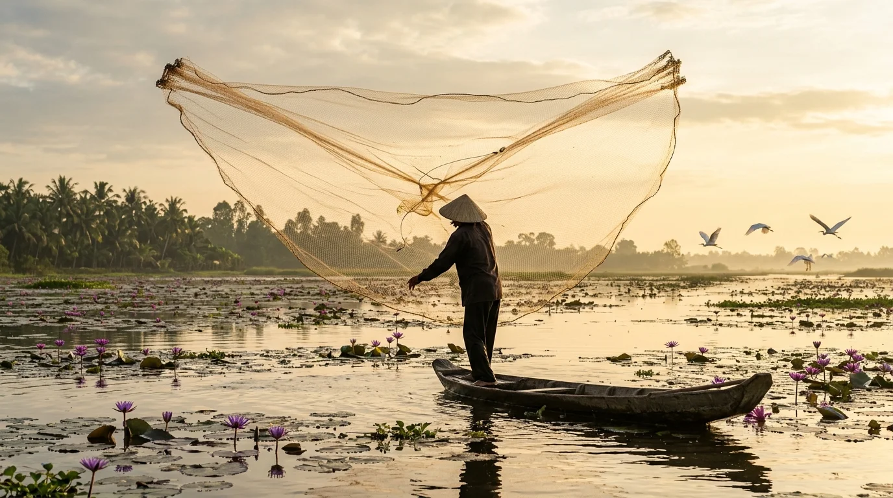
Tháng 9 – Tháng 11🌊 Mùa Nước Nổi — Thời Khắc Vàng Của Phù Sa & Bèo Xanh
Khi con nước lũ hiền hòa từ sông Mê Kông dâng tràn qua đồng, An Giang bước vào mùa du lịch đẹp nhất năm. Thảm bèo cám Trà Sư dâng ngập xanh rờn, từng đàn cá linh non tràn vào đồng nội ăn theo hoa điên điển vàng rực nở rộ. Đây là thời điểm tuyệt vời nhất để ngồi xuồng ba lá lướt trên mặt nước, ngắm ngư dân giăng lưới bông súng ma dài 3–5m trong ánh rạng đông.
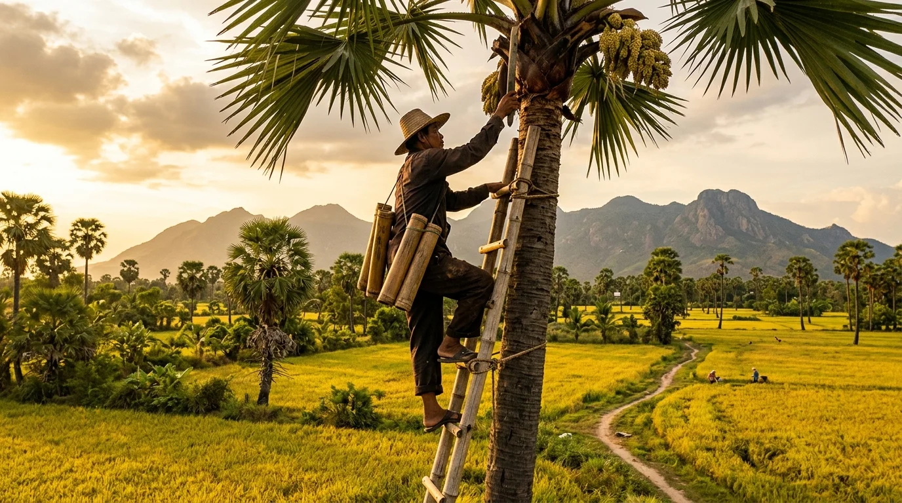
Tháng 12 – Tháng 4🌴 Mùa Thu Hoạch Thốt Nốt & Mùa Khô Nắng Vàng
Bước vào mùa khô, bầu trời An Giang trong xanh văn vắt, nắng vàng như rót mật lên những rặng thốt nốt sum suê trĩu quả. Đây là mùa người dân Khmer thoăn thoắt leo lên ngọn thốt nốt hứng từng ống nước ngọt mát lành, rồi nhóm lửa nấu những mẻ đường thốt nốt thơm lừng ngào ngạt khắp xóm làng Tri Tôn, Tịnh Biên.
🏮 Mùa Lễ Hội Vía Bà Chúa Xứ & Tết Chol Chnam Thmay
Mùa lễ hội tâm linh quy mô lớn nhất phương Nam hội tụ hàng triệu lượt Phật tử và du khách bốn phương tề tựu về cầu bình an, tài lộc tại miếu Bà Núi Sam. Cùng thời gian này, các chùa tháp Khmer rộn rã đón Tết té nước Chol Chnam Thmay với những điệu múa Lâm Thôn truyền thống, hòa chung nhịp sống đa sắc tộc độc đáo.
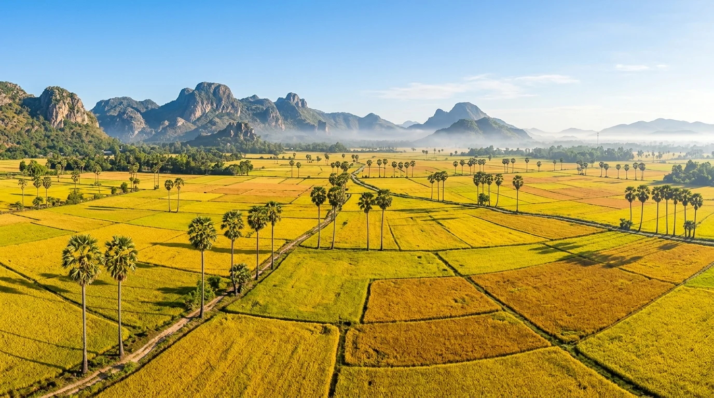
Tháng 7 – Tháng 8🌾 Mùa Vàng Thất Sơn — Bức Tranh Lúa Rực Rỡ Dưới Chân Núi
Trước khi con nước nổi tràn về, cánh đồng Tà Pạ và Tri Tôn khoác lên màu áo vàng rực óng ả. Khác với ruộng bậc thang vùng cao Tây Bắc, ruộng lúa ở đây được đồng bào Khmer chia thành những ô thửa vuông vức đa sắc màu, xen kẽ với những hàng cây thốt nốt sừng sững vươn thẳng lên trời xanh biếc.
📸 5. Top 10 Thắng Cảnh Biểu Tượng & Dấu Tích Lịch Sử
Dưới đây là 10 điểm đến không thể bỏ lỡ khi đặt chân tới xứ Thất Sơn và miền sông nước An Giang:
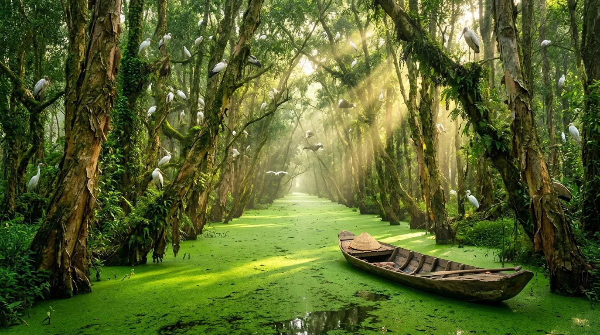
🔥 Sinh Thái Biểu Tượng · Tịnh Biên1. Rừng Tràm Trà Sư (Tịnh Biên)
Thả mình trên chiếc xuồng ba lá lướt nhẹ rẽ lối giữa thảm bèo cám xanh ngọc bích ngút ngàn, dưới vòm tràm cổ thụ rợp bóng mát và tiếng chim rừng ríu rít chuyền cành.
2. Miếu Bà Chúa Xứ Núi Sam (Châu Đốc)
Điểm tựa tâm linh bậc nhất Nam Bộ, nơi hội tụ đức tin ngàn đời với pho tượng sa thạch Óc Eo cổ nghìn năm linh hiển.
3. Núi Cấm — Thiên Cấm Sơn (Tịnh Biên)
Nóc nhà Thất Sơn hùng vĩ bảng lảng sương mù, chiêm bái đại tượng Phật Di Lặc an lạc bên mặt hồ Thủy Liêm xanh ngắt.
4. Chùa Hang — Phước Điền Tự (Núi Sam)
Cổ tự cheo leo tựa lưng vào vách đá núi Sam linh thiêng, gắn liền truyền tích rắn thần nghe kinh và tầm nhìn ngoạn mục ôm trọn đồng bằng biên viễn.
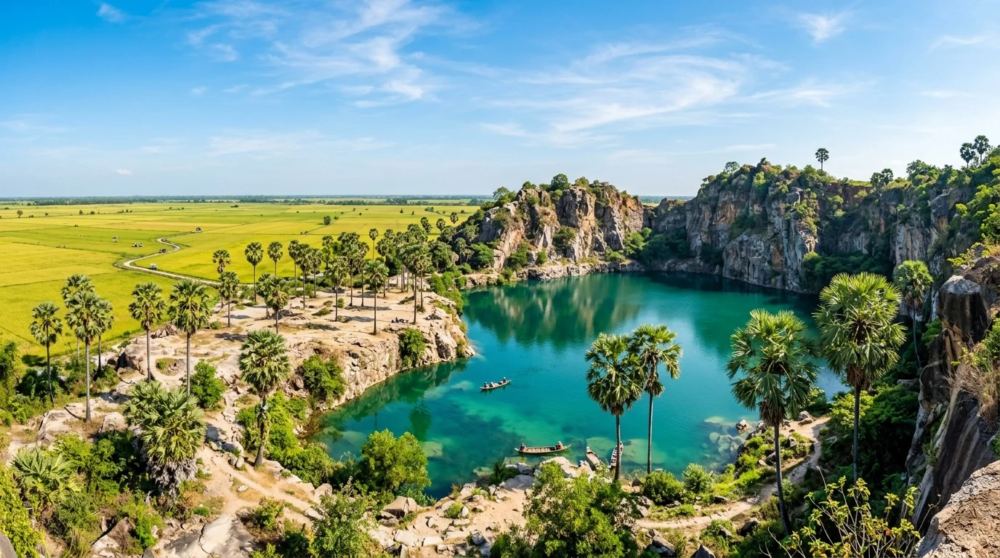
Chùa Khmer Núi · Tri Tôn5. Hồ Tà Pạ & Chùa Tà Pạ (Tri Tôn)
Ngôi chùa Khmer thanh tịnh uy nghiêm ngự trên đồi cao, nhìn xuống hồ nước xanh ngọc bích tựa chốn bồng lai nơi biên cương.
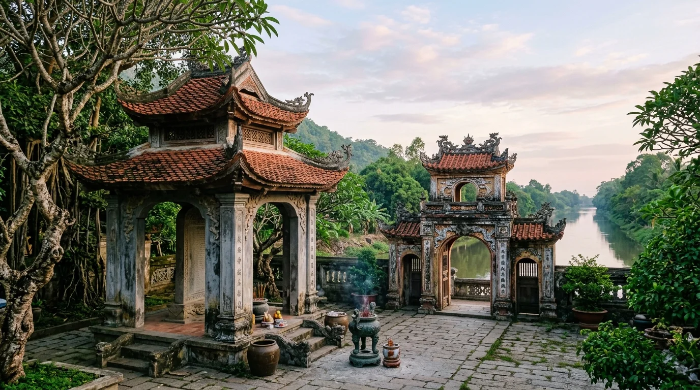
Di Tích Quốc Gia 1997 · Châu Đốc6. Lăng Thoại Ngọc Hầu & Kênh Vĩnh Tế
Kính cẩn tri ân vị đại thần khai hoang mở cõi và chiêm ngưỡng công trình kênh đào Vĩnh Tế thủ công vĩ đại nhất lịch sử dân tộc.
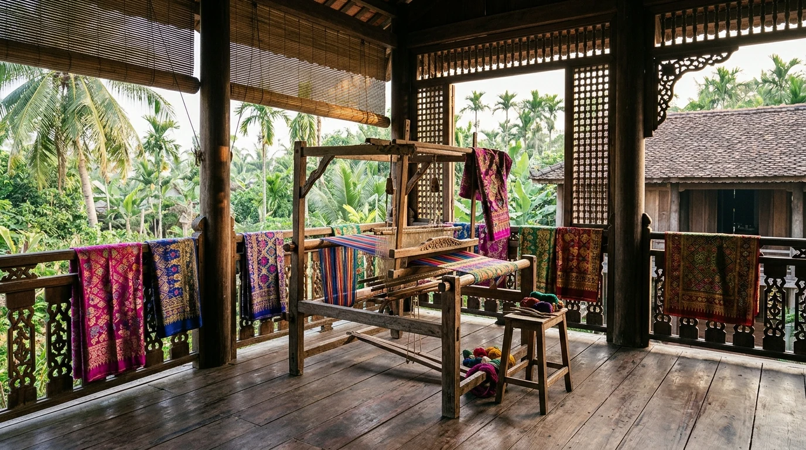
🔥 Di Sản Bản Làng Cổ · Nghề Dệt Thổ Cẩm Trăm Năm7. Làng Chăm Châu Phong & Đa Phước — Di Sản Dệt Thổ Cẩm Trăm Năm
Bản làng di sản độc đáo bên sông Tiền với những nếp nhà sàn gỗ cổ kính, khung cửi dệt sà rông thổ cẩm rực rỡ và tháp thánh đường Hồi giáo Mubarak uy nghiêm in bóng mây trời.
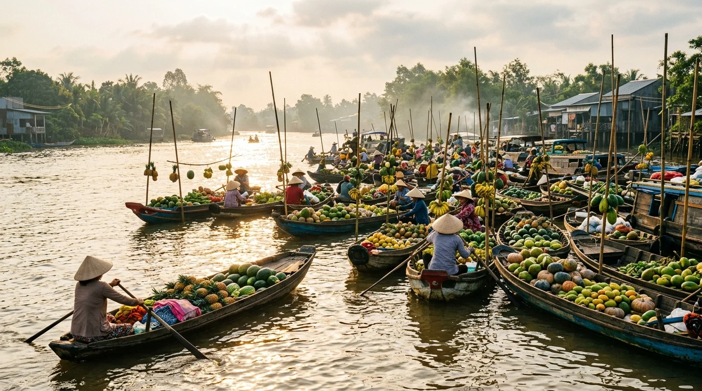
Văn Hóa Sông Nước · Long Xuyên8. Chợ Nổi Long Xuyên (TP. Long Xuyên)
Ghe xuồng tấp nập giao thương rau củ nông sản ban mai, gìn giữ nhịp sống sông nước miền Tây nguyên bản không pha tạp.
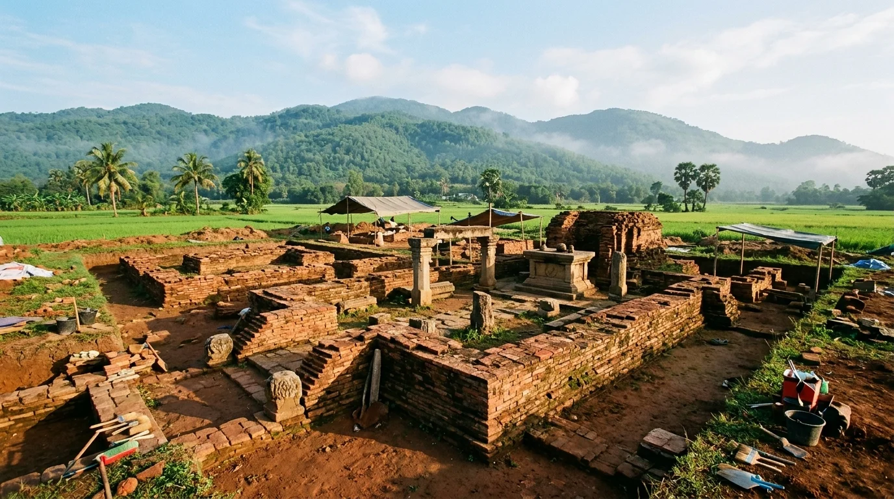
Di Tích Quốc Gia Đặc Biệt · Thoại Sơn9. Di Tích Khảo Cổ Óc Eo – Ba Thê (Phù Nam)
Đô thị cảng cổ phồn hoa bậc nhất Đông Nam Á cổ đại, nơi lưu giữ trầm tích ngàn năm của đế chế Phù Nam rực rỡ.
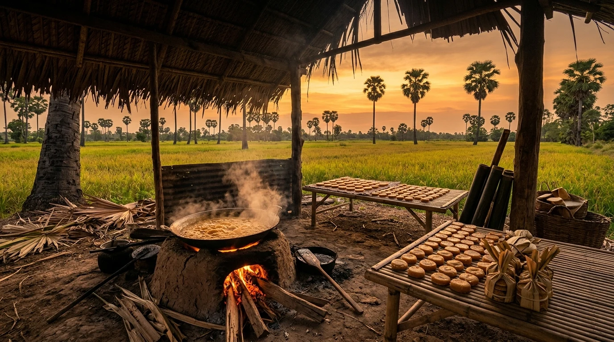
🔥 Di Sản Làng Nghề Miệt Vườn · Thủ Phủ Thốt Nốt Bảy Núi10. Cánh Đồng Thốt Nốt & Làng Nghề Nấu Đường Thủ Công Tri Tôn
Bức tranh kỳ vĩ của hàng vạn cây thốt nốt cổ thụ sừng sững giữa ráng chiều Tây Nam, trải nghiệm nhịp sống làng nghề nấu đường mật ngọt thanh tao đượm tình đồng bào Khmer Bảy Núi.
🚗 6. Cẩm Nang Di Chuyển Đến An Giang & Cung Đường Giao Thông
An Giang cách TP. Hồ Chí Minh khoảng 210km (Châu Đốc khoảng 250km). Hệ thống cầu cống và quốc lộ đã hoàn thiện khang trang:
1. Cách di chuyển từ TP. Hồ Chí Minh đến An Giang
- Xe khách giường nằm cao cấp: Các hãng xe uy tín như Phương Trang, Huệ Nghĩa, Hùng Cường khởi hành liên tục 24/7 từ bến xe Miền Tây đi Long Xuyên hoặc Châu Đốc. Thời gian di chuyển khoảng 5 – 6 giờ qua cao tốc Trung Lương – Mỹ Thuận.
- Ô tô cá nhân / Xe máy phượt: Lộ trình phổ biến: TP.HCM → Cao tốc Trung Lương – Mỹ Thuận → Cầu Mỹ Thuận 2 → Sa Đéc (Đồng Tháp) → Phà Vàm Cống / Cầu Vàm Cống → Long Xuyên → Châu Đốc. Đường đi rộng thoáng, phẳng phiu.
2. Phương tiện đi lại tại An Giang
- Thuê xe máy: Giá từ 120.000 – 150.000 VNĐ/ngày tại khách sạn Châu Đốc hoặc Long Xuyên. Xe máy là phương tiện cơ động nhất để luồn lách qua các bờ kênh, vườn thốt nốt Tri Tôn và đèo dốc Núi Cấm.
- Xuồng ba lá / Tắc ráng (Vỏ lãi): Phương tiện không thể thiếu để khám phá Rừng tràm Trà Sư, chợ nổi Long Xuyên và làng bè sông Châu Đốc.
3. Phương Tiện Đi Lại Khám Phá Nội Tỉnh
- Thuê xe máy: Giá dao động từ 120.000 – 150.000 VNĐ/ngày tại Châu Đốc hoặc Long Xuyên, phương tiện cơ động nhất để săn hoàng hôn cánh đồng thốt nốt Tri Tôn và hồ Tà Pạ.
- Thuê ô tô du lịch: Xe 4–7 chỗ có người lái từ 1.000.000 – 1.400.000 VNĐ/ngày theo lộ trình Long Xuyên – Châu Đốc – Tịnh Biên – Tri Tôn.
- Tắc ráng máy & Xuồng ba lá: Phương tiện trải nghiệm đặc trưng tại Rừng tràm Trà Sư và Làng nổi Châu Đốc, người lái xuồng chèo tay lướt êm ái trên thảm bèo cám xanh rì.
🍲 7. Tinh Hoa Ẩm Thực Đặc Sản Sông Nước Thất Sơn
Ẩm thực An Giang là sự hòa quyện tinh hoa của hương vị sông nước phù sa và nếp ẩm thực phong phú của 4 dân tộc Kinh, Chăm, Hoa, Khmer:
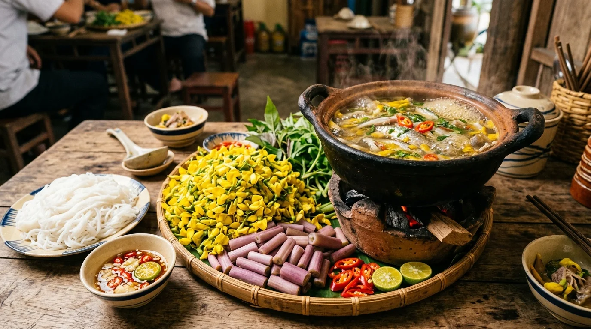
🍲 Lẩu cá linh bông điên điển
Biểu tượng ẩm thực mùa nước nổi! Những chú cá linh đầu mùa non mềm béo ngậy nấu cùng nước dừa tươi, me chua thanh dịu và nhúng ngập những chùm bông điên điển vàng ươm giòn ngọt.
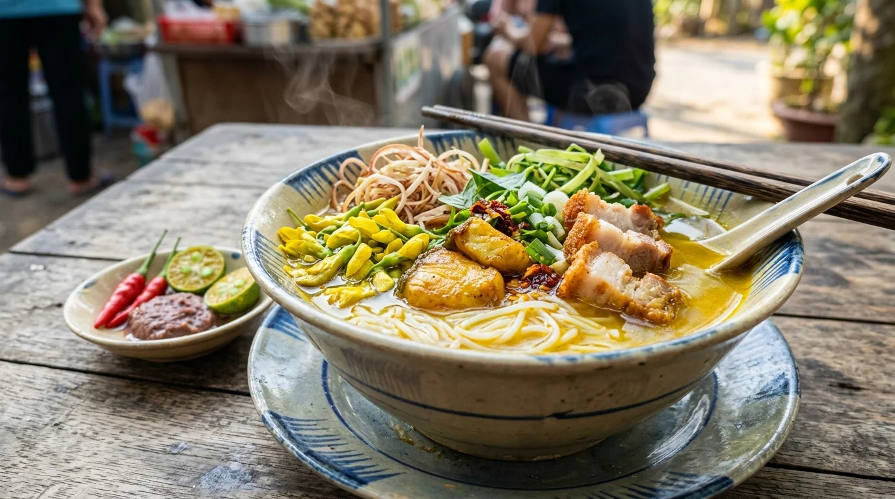
🍜 Bún cá Châu Đốc
Nước dùng nấu từ xương ống ngọt lịm thơm nồng củ ngải bún và nghệ vàng tươi, thịt cá lóc đồng xào săn thơm lừng ăn kèm bông điên điển, rau đắng và chả lụa.
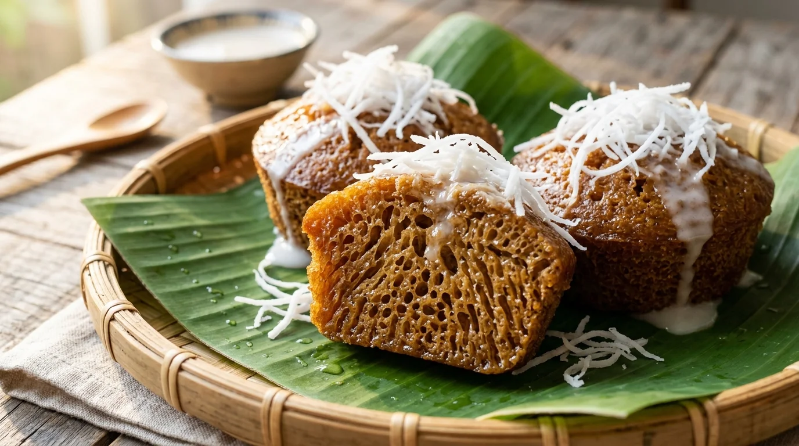
🥞 Bánh bò thốt nốt
Đặc sản nức tiếng làm từ đường thốt nốt nguyên chất và bột gạo ngâm men cơm rượu. Bánh có màu vàng mật ong tự nhiên, xốp mềm nhiều rễ tre và thoang thoảng vị béo cốt dừa ngây ngất.
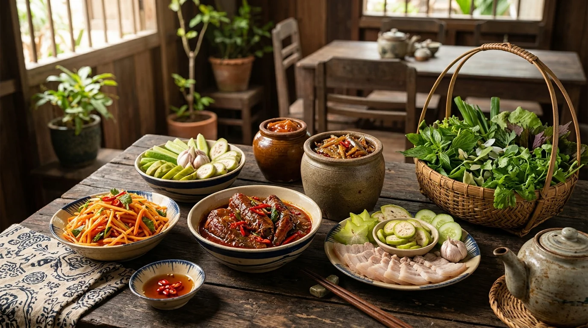
🐟 "Vương quốc mắm" Châu Đốc
Chợ mắm Châu Đốc với hàng trăm loại mắm cá linh, mắm cá lóc, mắm cá sặc, mắm thái thơm lừng trứ danh. Mắm ăn kèm thịt luộc, chuối chát, khế chua là món ăn đậm đà khó quên.
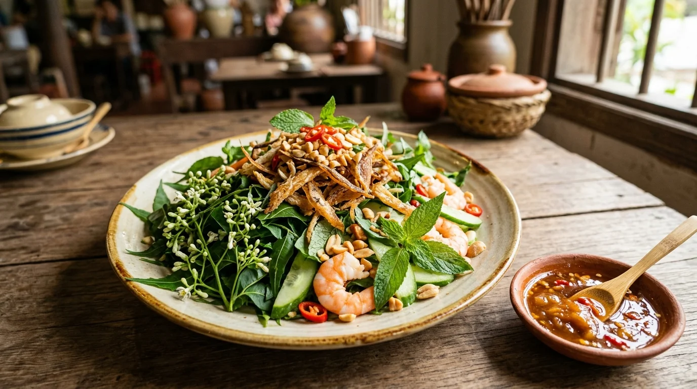
🥗 Gỏi sầu đâu khô cá lóc
Đọt lá sầu đâu có vị đắng hậu ngọt thanh trộn cùng khô cá lóc nướng xé sợi, dưa leo, xoài băm và chấm nước mắm me chua ngọt đậm đà phong vị biên cương.
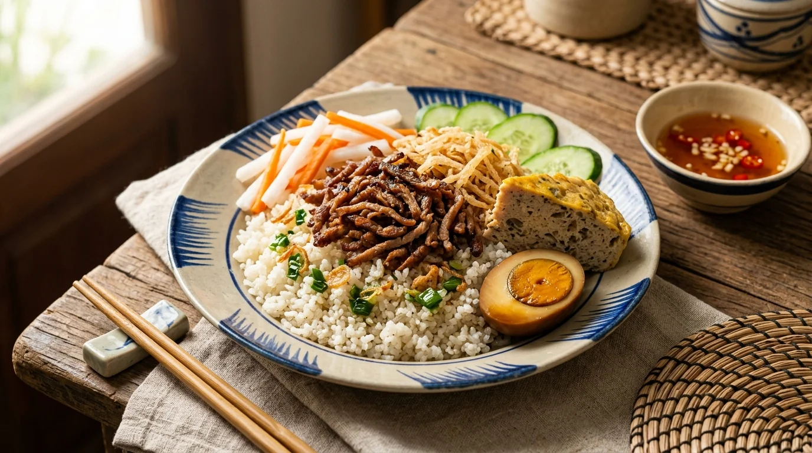
🍖 Cơm tấm Long Xuyên
Hạt tấm nhuyễn mịn đặc trưng, thịt sườn nướng thái sợi nhỏ xíu mềm thấm vị, ăn kèm bì thính, chả trứng và một quả trứng kho đậm đà thơm béo.
💰 8. Bảng Giá Vé Tham Quan & Dịch Vụ Du Lịch Niêm Yết
Dưới đây là mức giá vé niêm yết chính thức tại các ban quản lý khu du lịch và danh thắng tại An Giang:
| Địa điểm / Dịch vụ | Chi phí tham khảo | Ghi chú |
|---|---|---|
| Rừng tràm Trà Sư (Trọn gói xuồng chèo + vỏ lãi) | 200.000 VNĐ / khách | Bao gồm vé vào cổng, đi tắc ráng máy và xuồng chèo tay ngắm bèo |
| Cáp treo Núi Cấm (Khứ hồi) | 200.000 VNĐ / người lớn | Trẻ em: 100.000 VNĐ (dưới 1m3) |
| Xe máy / Xe ôm chở lên đỉnh Núi Cấm | 100.000 – 120.000 VNĐ / khứ hồi | Đội xe ôm chuyên nghiệp do ban quản lý cấp thẻ an toàn |
| Xe điện tham quan KDL Núi Sam | 20.000 – 30.000 VNĐ / lượt | Đưa đón khách từ bãi đỗ xe vào cổng Miếu Bà |
| Thuê thuyền tham quan Làng bè & Làng Chăm Châu Đốc | 150.000 – 250.000 VNĐ / thuyền | Giá thuyền riêng chở từ 4 – 8 người trong 1.5 – 2 tiếng |
| Thuê ghe tham quan Chợ nổi Long Xuyên | 150.000 – 200.000 VNĐ / thuyền | Khởi hành từ bến phà Ô Môi lúc 5h30 – 7h00 sáng |
| Miếu Bà Chúa Xứ Núi Sam & Chùa Hang | Miễn phí vào cửa | Điểm chiêm bái tâm linh tự do |
* Lưu ý: Bảng giá trên chỉ mang tính chất tham khảo tại thời điểm cập nhật và có thể thay đổi theo từng thời kỳ hoặc chính sách điều chỉnh của Ban quản lý khu du lịch.
🧭 9. Gợi Ý Lịch Trình Khám Phá An Giang 3N2Đ & Mẹo Trải Nghiệm An Toàn
🗓️ Ngày 1: TP.HCM / Cần Thơ → Long Xuyên (Chợ Nổi, Cơm Tấm) → Châu Đốc
Khởi hành sáng sớm từ TP.HCM hoặc Cần Thơ về TP. Long Xuyên. Thưởng thức dĩa cơm tấm nhuyễn Long Xuyên trứ danh, ghé thăm Chợ nổi Long Xuyên trên dòng sông Hậu. Đầu giờ chiều di chuyển lên TP. Châu Đốc viếng Miếu Bà Chúa Xứ Núi Sam linh thiêng, chiêm bái Tây An Cổ Tự và viếng Lăng danh tướng Thoại Ngọc Hầu. Chiều tối dạo chợ đêm Châu Đốc mua đặc sản mắm cá linh, mắm thái và thưởng thức bún cá Châu Đốc thơm nức mũi.
🗓️ Ngày 2: Làng Chăm Đa Phước → Rừng Tràm Trà Sư → Núi Cấm (Thiên Cấm Sơn)
Sáng sớm lên thuyền ghé thăm Làng bè nổi Châu Đốc và Làng Chăm Đa Phước tìm hiểu nghề dệt thổ cẩm truyền thống. Sau đó di chuyển sang Rừng tràm Trà Sư (Tịnh Biên), ngồi tắc ráng và xuồng chèo tay lướt giữa thảm bèo cám xanh mướt ngút ngàn, ngắm đàn chim nước chao liệng. Buổi trưa ăn lẩu cá linh bông điên điển tại nhà hàng rừng tràm. Buổi chiều đi cáp treo lên đỉnh Núi Cấm (độ cao 705m), chiêm bái Tượng Phật Di Lặc lớn nhất châu Á và vãn cảnh Chùa Vạn Linh bên hồ Thủy Liêm mây phủ.
🗓️ Ngày 3: Tri Tôn (Hồ Tà Pạ, Hàng Thốt Nốt Trái Tim) → Di Tích Óc Eo → Tạm Biệt An Giang
Khám phá huyện miền núi Tri Tôn: check-in hàng thốt nốt hình trái tim lãng mạn giữa đồng lúa, leo đồi ngắm hồ đá Tà Pạ nước trong vắt màu ngọc bích và viếng Chùa Tà Pạ kiến trúc Khmer Angkor tuyệt mỹ. Thưởng thức nước thốt nốt tươi ngọt mát và bánh bò thốt nốt nóng hổi. Tiếp tục sang Thoại Sơn tham quan Di tích quốc gia đặc biệt Óc Eo - Ba Thê tìm hiểu nền văn minh Phù Nam rực rỡ trước khi lên xe khởi hành về lại.
⚠️ An toàn đường thủy bắt buộc: Khi đi tắc ráng máy hoặc xuồng ba lá len lỏi trong rừng tràm Trà Sư hay chợ nổi, bắt buộc phải mặc áo phao bảo hộ đúng quy định. Không nhoài người ra mạn thuyền để chụp ảnh hoặc thò tay xuống nước khi thuyền đang rẽ sóng.
💡 Trang phục & Hành trang: Thời tiết An Giang nắng ấm quanh năm. Nên mặc trang phục cotton thấm hút mồ hôi, mang nón rộng vành, kính râm và kem chống nắng. Đặc biệt nhớ chuẩn bị thuốc xịt chống muỗi/côn trùng khi tham quan rừng tràm ngập nước.
📌 Tôn nghiêm nơi thờ tự: Khi viếng Miếu Bà Chúa Xứ Núi Sam, Chùa Hang hay các chùa tháp Phật giáo Nam tông Khmer, hãy mặc trang phục kín đáo (quần/váy dài qua gối, áo có tay). Cẩn thận tư trang cá nhân, tiền bạc ở các điểm đông người hành hương dịp lễ hội.